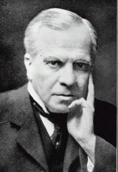
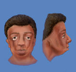

|  |
Treacher Collins syndrome = coloboma of the lower lid at the
junction of the middle and lateral third of the lid with systemic anomalies
such as mandibulofacial dysostosis and malformed ear. It is an autosomal
dominant condition.
|  |
Edward Treacher Collins was the son of Dr. W. J. Collins, a London physician, and a Miss Treacher who came from an old Huguenot family. He was given his mother’s maiden name as a forename and, in accordance with the custom of the time, used the doubled-barrelled surname without a hyphen. He went to school at University College and entered Middlesex Hospital in 1879, graduating in 1883. Influenced by his older brother, Sir William Collins, a distinguished ophthalmologist, he pursued a career in this speciality.
In 1884 he interned at the Royal London Ophthalmic Hospital, Moorfields, where he spent the next 48 years. In 1886 he was appointed pathologist and curator of the hospital’s museum. He remained in this position until 1895 when he was appointed surgeon to the hospital. His work as a pathologist at the hospital formed the basis of his lectures and a book which he published in 1896 called Researches into the Anatomy and Pathology of the Eye. His publication attracted people from America and Europe as well as the United Kingdom to the hospital to work with him.
He also lectured at the Charing Cross Hospital Medical School as well as 1894 and 1899 at the Royal College of Surgeon.
In 1895 he was married to a New Zealander and spent a romantic honeymoon in Persia in Ispahan where he had been asked to treat the elder son of the reigning shah, Prince Izel a'Sultan and was awarded the Lion and the Sun decoration in appreciation of his services.
Apart from his diverse scientific interests, in his early days he had been an excellent rugby player and was an outstanding horse rider, following the Queen’s Buck Hounds, just as his father had done and was a skilful sketcher and painter and illustrated much of his work.
Treacher Collins was noted for his industry, persistence and clarity of thought. He is said to have preferred investigation for its possible application and utility rather than purely for the love of discovery. He applied his mind to each problem in a careful and methodical manner, but once he had worked it out and decided upon a hypothesis based upon his facts, he was said to be very difficult to shift, even when evidence was produced which seemed to make his explanation unlikely. His dogmatism, although perhaps a drawback for scientific advancement, was an advantage in his teaching. He was said to be somewhat dour in appearance but had a fine sense of humour and was a witty after-dinner speaker. He did much both on the national and international scene in development of ophthalmology. He was a leading figure in the organisation of the British Ophthalmological Society as well as the international council of ophthalmology and in 1927 he was elected president. He occupied the office with distinction in the difficult period of post-war conciliation, aided by his charm and flair.
Bibliography: